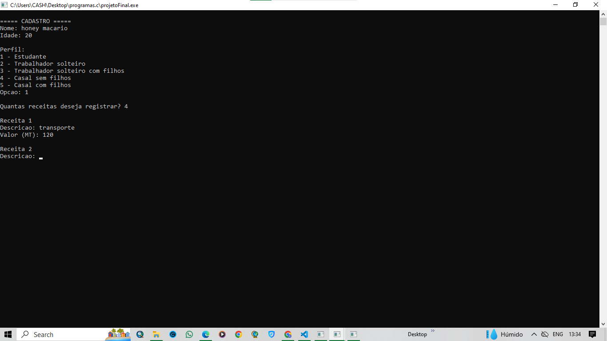

Programa de Gestão Financeira Pessoal
Este projeto foi desenvolvido com o objetivo de ajudar na organização e controlo das finanças pessoais.
O programa permite registar receitas e despesas, acompanhar os gastos e obter informações sobre a situação financeira do utilizador.
Foi desenvolvido utilizando conhecimentos de programação em C++.